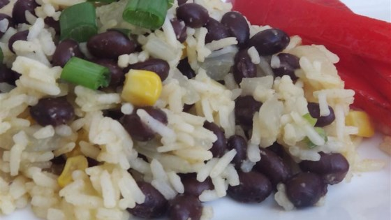

Time: 30 minutes
Cost: $4.79
Servings: 6
1. Heat your oil over medium heat.
2. Add the onion and garlic and saute for 4 minutes. how to: saute
3. Add the rice and saute for another 2 minutes.
4. Add in the vegetable broth, bring to a boil, lower the heat and cook for 20 minutes.
5. Add the spices and black beans immediately before you serve.
Source: http://allrecipes.com/recipe/15559/black-beans-and-rice/